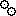

Creating new schedule(Field marked with * is required)
Editing schedule "
nightly
"(Field marked with * is required)
error message
name
*
Provide a name for this schedule. This name will be used to identify this schedule, and can not be changed later.
description
Provide a description for this schedule
trigger type
Select the trigger type for this schedule. "manual" means build in this schedule can only be triggered manually. "simple" can be used to configure a periodically trigger, and "cron" can be used to configure a cron-like trigger. Refer to
http://www.opensymphony.com/quartz/
for detail information
about quartz
repeat interval(minutes)
*
Set the repeat interval for this schedule
cron expression
*
Set the cron expression for this schedule, the format is <seconds> <minutes> <hours> <day-of-month> <month> <day-of-week>. For example, 0 0 1 * * ? stands for 1:00am every day. For details of the format, refer to
http://www.opensymphony.com/quartz/tutorial.html#cronTriggers
build type
Select the build type for this schedule, clean build can be more reliable, but maybe slower. Increment build can be quicker, but less reliable. Suggest all important schedules such as nightly, release should be clean build, and for very frequent schedules such as hourly development build, can be increment.
NOTE: This setting will only take effect when the build is not trigged manually. For manual builds, this value will be shown as the default value when schedule a manual build.
 build strategy
Select the build strategy for this schedule. There are three strategy, respectively:
build when necessary
: only performs the build when necessary. A build is necessary when "build necessary condition" of the project evaluates to true
build always if failed
: always performs the build when previous build in this schedule fails, regards of value of the "build necessary condition" of the project. However, if last build succeeds, "build when necessary" strategy will be followed
build always
: always perform the build at specified time, even there is no any changes in the repository.
do not build
: never perform the build, this can be used to pause this schedule.
NOTE: This setting will only take effect when the build is not trigged manually.
post-build strategy
do not post-build
: do not execute post-build script after build.
post-build when success
: execute post-build script only when build is successful.
post-build when failed
: execute post-build script only when build is failed.
post-build always
: always execute post-build script after build.
NOTE: This setting will only take effect when the build is not trigged manually. For manual builds, this value will be shown as the default value when schedule a manual build.
label strategy:
Choose the label strategy for this schedule. There are three strategy, repectively:
label successful builds
: label the repository only for successful builds.
do not label
: do not label the repository after build.
label always
: always label the repository after build.
NOTE1: if a build is not get labeled when it is initially built, it will not be rebuildable later
NOTE2: This setting will only take effect when the build is not trigged manually. For manual builds, this value will be shown as the default value when schedule a manual build.
notify strategy
Choose the notify strategy for this schedule. There are three strategy, repectively:
notify when status changed
: send notification when status of current build changes against last build. That is, notification will be sent when current build succeeds and last build fails, or current build fails and last build succeeds.
notify when failed
: send notification only when build failed.
notify when success
: send notification only when build success.
do not notify
: do not send notification after build.
notify always
: always send notification after build.
NOTE: This setting will only take effect when the build is not trigged manually. For manual builds, this value will be shown as the default value when schedule a manual build.